Content
- Speech Production
- Visual Speech
- Visemes
- Coarticulation
Audiovisual Processing CMP-6026A
Dr. David Greenwood
in a visual context
Speech can be regarded as a filtering process.
The filter response is determined by the vocal tract shape, which is dependent on the position of the speech articulators.


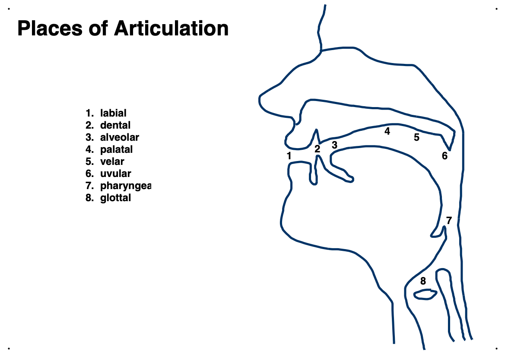
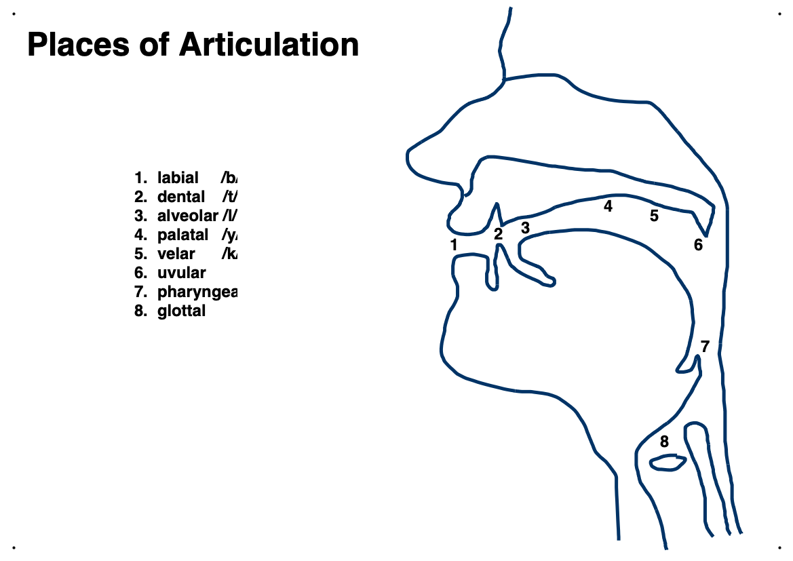

The place of articulation describes where a speech sound is formed.
The manner of articulation describes how a speech sound is formed.
Note: these manners of articulation are not mutually exclusive.
Consonants are characterised by the place and manner of articulation.
For vowels the airflow is relatively unobstructed.
Vowels cannot be characterised by the place or manner of articulation.
Vowels are characterised by:
Diphthongs are the concatenation of two vowels.
Speech is about more than just sounds.
Speech formation can be felt.
Some deaf-blind people use the Tadoma method of communication.
Can you discriminate between “dog” and “bog”, in noisy audio?
Can you discriminate between “dog” and “bog”, when the articulators are visible?
Audiovisual speech is complementary in nature.
Sounds that sound similar often look different
eg. /b/, /d/, /m/, /n/, /f/, /s/
The formation of sounds that look the same sound different
eg. /f/, /v/, /s/, /t/, /b/, /p/
Visual information provides an effective improvement of \(\approx 11 dB\) in signal-to-noise ratio.
Vision can improve understanding of hard-to-understand utterances.
Benjamin Franklin invented bi-focal spectacles to help better understand French!
“… since my being in France, the glasses that serve me best at table to see what I eat, not being the best to see the faces of those on the other side of the table who speak to me;
… and when one’s ears are not well accustomed to the sounds of a language, a sight of the movements in the features of him that speaks helps to explain…
so that I understand French better by the help of my spectacles.”
– Benjamin Franklin, in 1785
Visual speech can alter our perception of a sound.
This is illustrated by the McGurk effect.
McGurk & MacDonald, Hearing lips and seeing voices. 1976
Auditory “baa” with visual “gaa” is often perceived as “daa”.
“baa” or “faa”?
“Bill”, “pail”, “mayo”?
Also on YouTube:
Coarticulation
Phonemes are abstract representations of sound.
WRONG!!
The articulator positions do not depend only on the current sound.
The articulators never reach their ideal target.
This is known as coarticulation.
There are two forms of coarticulation:
The same phoneme in different contexts both sounds and looks different.
 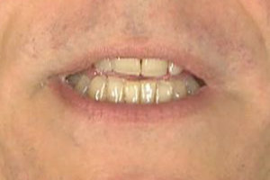
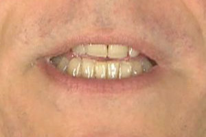  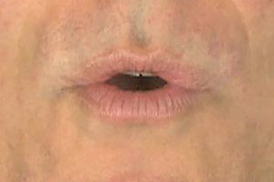 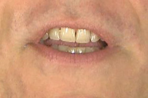
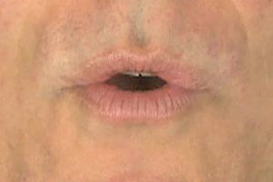 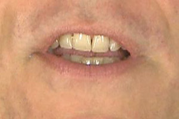
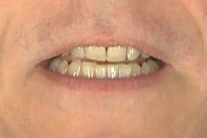 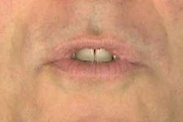 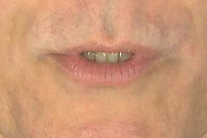  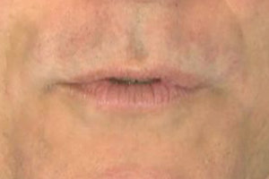
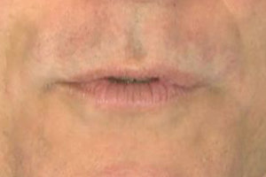
There is no definitive model of coarticulation.
One is the “Look ahead” model.
Speech gestures begin as early as possible provided there are no constraints on the articulators.
The look ahead model assumes lazy speech production and allows gradual transitions between speech targets.
An alternate model is the temporal model.
The temporal model assumes that speech gestures begin at a fixed time prior to the onset of a sound.
The temporal model assumes that speech gestures are largely independent and that speech is the superposition of the gestures.
There are also hybrid models:
Speech is multi-modal in nature!
A view of the articulation is useful for disambiguating similar sounds.
To a limited extent we all lip-read regardless of our awareness.
Visual speech is poorly defined compared with acoustic speech.